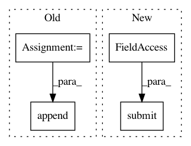

ce579cf021ca1ee0705bd9484aae55e0d110d0e7,cnvlib/commands.py,,batch_make_reference,#Any#Any#Any#Any#Any#Any#Any#Any#Any#Any#Any#Any#Any#Any#Any#Any#,123
Before Change
for nbam in normal_bams:
sample_id = core.fbase(nbam)
sample_pfx = os.path.join(output_dir, sample_id)
tgt_fname = sample_pfx + ".targetcoverage.cnn"
pool.apply_async(batch_write_coverage,
(target_bed, nbam, tgt_fname, by_count))
target_fnames.append(tgt_fname)
anti_fname = sample_pfx + ".antitargetcoverage.cnn"
pool.apply_async(batch_write_coverage,
(antitarget_bed, nbam, anti_fname, by_count))
antitarget_fnames.append(anti_fname)
After Change
sample_id = core.fbase(nbam)
sample_pfx = os.path.join(output_dir, sample_id)
tgt_futures.append(
pool.submit(batch_write_coverage,
target_bed, nbam,
sample_pfx + ".targetcoverage.cnn",
by_count))
anti_futures.append(
pool.submit(batch_write_coverage,
antitarget_bed, nbam,
In pattern: SUPERPATTERN
Frequency: 3
Non-data size: 4
Instances
Project Name: etal/cnvkit
Commit Name: ce579cf021ca1ee0705bd9484aae55e0d110d0e7
Time: 2016-09-08
Author: eric.talevich@gmail.com
File Name: cnvlib/commands.py
Class Name:
Method Name: batch_make_reference
Project Name: analysiscenter/batchflow
Commit Name: f655fd8ff333159ffa88e1dfbcf2e32f706c9d97
Time: 2017-04-19
Author: rhudor@gmail.com
File Name: dataset/pipeline.py
Class Name: Pipeline
Method Name: run
Project Name: CoderEugene/DL-Gesture-Recognition
Commit Name: 772e311f63b18152aa2db5c141a4fb64d533613c
Time: 2018-03-22
Author: ycbnice@gmail.com
File Name: GestureGUI/GUI/interface.py
Class Name: Thread
Method Name: run